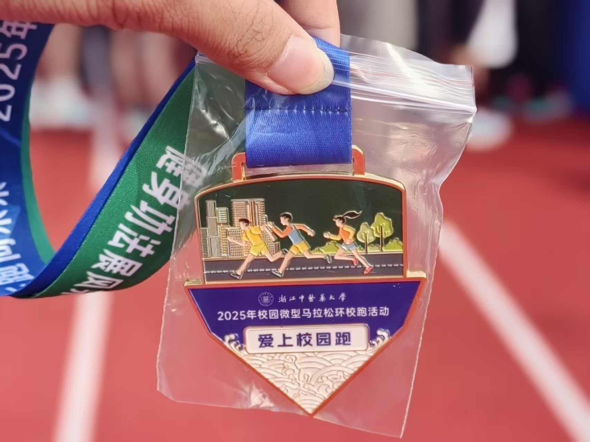
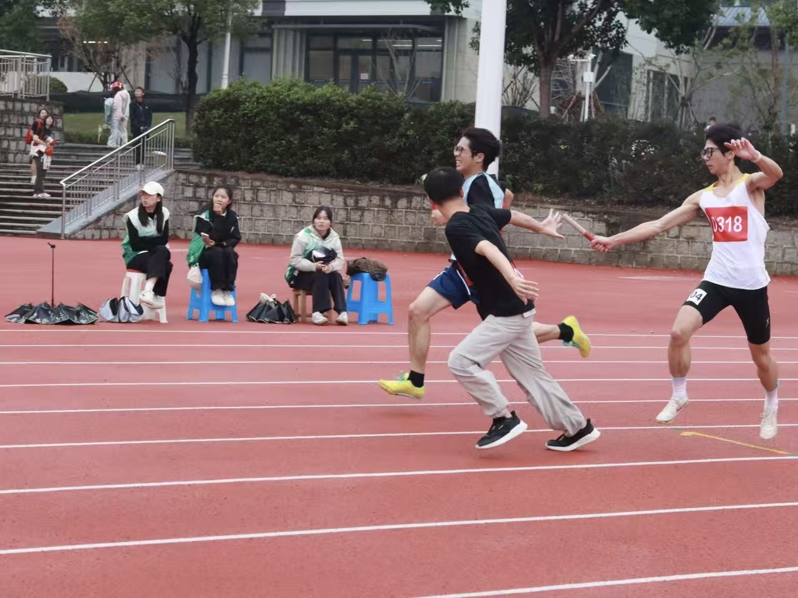

叶诚 - 大学经历档案
浙江中医药大学 | 医学技术与信息工程学院 | 计算机科学与技术专业 | 2024年9月-
学历：本科
校园个人邮箱：yecheng@zcmu.edu.cn
联系方式：17857116310
比赛经历
2025-10-09
【省】2025年全国大学生数学建模竞赛浙江赛区
赛题：A题
队伍：【第一梯队】叶诚、罗佳慧、徐航毅
奖项：三等奖
队伍：【第一梯队】叶诚、罗佳慧、徐航毅
奖项：三等奖
荣誉奖项与活动经历
2025年校园微型马拉松环校跑活动
2025.10.29

2025年校运动会4*100
2025.11.6

综测奖项
思想品德类综测加分细则
思想品德成绩由基本分5.6分、附加分和扣罚分组成，总分值不超过8分。
一、基本分5.6分获取条件：
- 1. 政治表现：热爱祖国，坚持四项基本原则，维护安定团结；不参加非法活动，关心国家大事，积极参与政治学习与社会实践。
- 2. 道德品质：注重个人修养，服饰整洁、待人有礼；团结友善、诚实守信，服从集体管理，维护公平正义。
- 3. 学习态度：学习目标明确、态度端正，勤奋钻研、有创新精神，无厌学旷课现象。
- 4. 实践公益：积极参与社会实践、青年志愿及公益活动，关心集体、热心服务他人。
二、附加分细则：
| 序号 | 加分项 | 加分值 | 备注 |
|---|---|---|---|
| 1 | 集体荣誉：获先进班团、社会实践团队等集体荣誉的全体成员 | 省级及以上：1.0分 校（市）级：0.3分 院级：0.1分 |
校级红旗团支部成员0.6分； 校级优秀志愿小分队成员0.25分 |
| 2 | 个人荣誉：获优秀党团员、军训标兵等称号 | 省级及以上：1.0分 校（市）级：0.5分 院级：0.1分 |
同类别称号以最高级别加分 |
| 3 | 遇突发事件挺身而出、见义勇为表现突出者 | 2.0分 | 须由学院测评小组认定 |
| 4 | 参加青年志愿活动（如电脑医院、听音驿站等） | 每5工时计0.1分，上限1分 | 须有证明材料 |
| 5 | 参加义务献血 | 0.2分 | |
| 6 | 捐献造血干细胞 | 1.0分 | |
| 7 | 未列举的其他符合加分事项 | - | 由学院测评小组认定加分项及分值 |
基础文明类综测加分细则
基础文明成绩由基本分5.6分、附加分和扣罚分组成，总分值不超过8分。
一、基本分5.6分获取条件：
- 1. 文明守纪：加强自我修养，遵守社会公德，尊敬师长、团结同学；遵守国家法律与学校规章，无违法违纪行为；遵守考试纪律，无作弊现象。
- 2. 学风表现：自觉遵守课堂纪律，不迟到早退、无故旷课；上课认真听讲，不睡觉、不玩手机；主动参加早锻炼、早读、晚自习及学校（院）组织的讲座/报告。
- 3. 寝室文明：寝室内务整洁，物品摆放有序；不使用违章电器、不私接电线；不赌博酗酒、不打架；寝室人际关系和谐，学习氛围浓厚，作息健康。
二、附加分细则：
| 序号 | 加分项 | 加分值 | 备注 |
|---|---|---|---|
| 1 | 自觉参加早读、早锻炼（按出勤率加分） | 100%：1.0分 80%：0.8分 50%：0.5分 |
- |
| 2 | 积极参加学院（校）组织的文体活动 | 0.1分/次，本项上限0.5分 | 须提供证明；文体活动获奖者在“能力素质”项加分，此项不重复加分 |
| 3 | 校内寝室评比活动获奖成员（按一/二/三等奖加分） | 校级：1.0/0.8/0.5分/人 院级：0.5/0.3/0.2分/人 |
不设评比等级的活动按校级0.8分、院级0.3分加分；校“十佳寝室”1.0分/人、“百强寝室”0.8分/人 |
| 4 | 学年寝室安全卫生检查全部合格且“优秀寝室”占比达80%及以上 | 80%：0.8分 100%：1.0分 |
以学工部公布的检查结果为依据 |
| 5 | 未列举的其他符合加分事项 | 由学院测评小组认定 | - |
能力素质类综测加分细则
能力素质成绩由基本分3分和附加分组成，总分值不超过8分。
二、附加分细则：
| 项目 | 加分项 | 加分值 | 备注 |
|---|---|---|---|
| 学术科研 | 各类技能/职业证书（ITAT、驾驶证除外） | 1.0分 | 仅限证书获得学年加分 |
| 大学英语四级 | 0.5分 | - | |
| 大学英语六级 | 0.8分 | ||
| 雅思 | 6-6.5分：1分；7分以上：1.2分 | ||
| 托福 | 80-90分：1分；90分以上：1.2分 | ||
| GRE成绩1100分及以上 | 1分 | 其它小语种证书由评议小组认定后加分 | |
| 小语种证书（日语/法语/德语等） | 日语能力1-4级：0.8/0.6/0.4/0.2分； 法语/德语四/三级：0.6/0.3分 |
||
| 浙江省计算机等级考试二/三级、程序能力考试（PAT）证书 | 0.5分 | ||
| 学术科研 | 科技/竞赛活动获奖者（学科竞赛、挑战杯等） | 国家级：5.0/4.0/3.0/2.0分； 省级：3.0/2.5/2.0/1.5分； 校（市）级：2.0/1.8/1.5/1.0分； 院级：1.0/0.8/0.5/0.2分 |
集体项目分配系数见备注 |
| 科研课题立项者 | 国家级：立项2分/结题2分； 省级：立项1.5分/结题1.5分； 校级：立项0.5分/结题0.5分 |
发展性资助项目不计入；集体项目分配系数见备注 | |
| 社会实践调研成果获奖者 | 国家级：1.5分；省级：0.8分； 校（市）级：0.2分 |
成果公开发表可同时参照论文项加分；集体项目分配系数见备注 | |
| 以第一作者发表学术论文 | SCI：5.0分； SCIE、EI、ISTP：3.0分； 卓越期刊：2.0分； 统计源期刊：1.5分； 其他刊物：0.8分 |
- | |
| 学术科研 | 获得国家专利/计算机软件著作权 | 国家授权发明专利：4.0分； 国家受理发明专利/授权实用新型专利：1.5分； 外观设计专利：1.0分 |
仅第一发明人加分 |
| 就业创业 | 大学生首次创业进驻创业园项目负责人 | 2.0分 | 仅学生本人向学院申请认定成功的学年加分 |
| 注册公司者、法人及合伙人 | 3.0分 | ||
| 淘宝网店、微店经营（符合学校认定要求） | 1.5分 | ||
| 文体特长 | 获得美育/体育相关资格等级证书 | 2.0分 | - |
| 个人在各类文体活动中获奖（不含趣味性） | 国家级：3.0/2.0/1.5/0.8分； 省级：2.0/1.5/0.8/0.5分； 校（市）级：1.0/0.8/0.5/0.3分； 院级：0.5/0.3/0.2分 |
此项累计不超过3分 | |
| 团体在各类文体活动中获奖（不含趣味性） | 国家级：2.0/1.5/1.0/0.8分； 省级：1.5/1.0/0.8/0.5分； 校（市）级：0.8/0.5/0.2/0.1分； 院级：0.3/0.2/0.1分 |
此项累计不超过2分 | |
| 文体特长 | 大型文艺活动参演（校级迎新晚会、毕业晚会等） | 1.0/0.8分 | 群体节目分值为原分×0.3；参演多个节目可累计，同一节目多次出演分数减半；此项累计不超过3分 |
| 社会工作 | 校团委委员 | 1.8分 | 如有兼职最多取2项最高分加分；所有社会工作任职需满一学年 |
| 校级组织：主席团/委员/秘书长等 | 1.7/1.6/1.5分（按优秀/良好/合格） | ||
| 校级组织：部长/专门工作委员会主任 | 1.4/1.3/1.2分（按优秀/良好/合格） | ||
| 校级组织：副部长 | 1.3/1.2/1.1分（按优秀/良好/合格） | ||
| 校院各级学生组织干事 | 0.5/0.4/0.3分（按优秀/良好/合格） | ||
| 院级组织：主席团/委员 | 1.6/1.5/1.4分（按优秀/良好/合格） | ||
| 院级组织：部长/团总支委员 | 1.1/1.0/0.9分（按优秀/良好/合格） | ||
| 院级组织：副部长/社团负责人/班级干部/寝室长 | 1.0/0.9/0.8分（副部长）； 0.8/0.6分（社团会长）；0.6/0.5分（社团副会长）； 班长/支书0.8分、班委0.5分； 寝室长0.5/0.3/0分（优秀/合格/不合格） |
||
| 特殊经历 | 学生自强不息（学院认定） | 1.0分 | - |
| 参与出/国境交流 | 3个月以上：0.6分；1个月以上：0.4分； 1周以上：0.2分 |
云上访学拿到结业证书者加0.2分 | |
| 学生应征入伍 | 1.0分 | - | |
| 参加省级及以上重大活动/会议（学院认定） | 0.5分 | 需提供相关文件证明 |
三、备注说明：
- 1. 科技活动、科研课题、社会实践等集体项目获奖：按排名乘系数（1.0/0.8/0.6/0.4/0.2，第六名及以后系数0.1）；不涉及排名则统一乘系数0.5。
- 2. 科研课题立项者加分系数可由指导老师分配（需提供书面证明）。